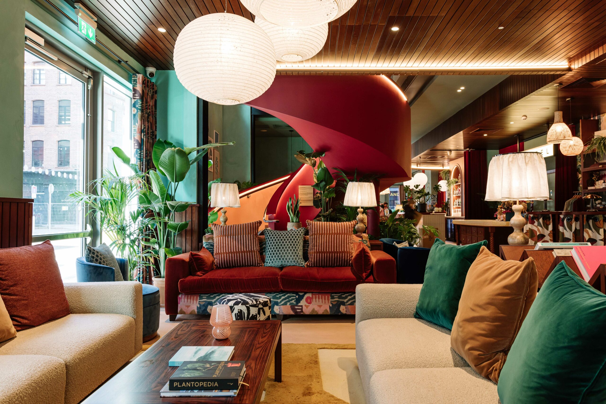
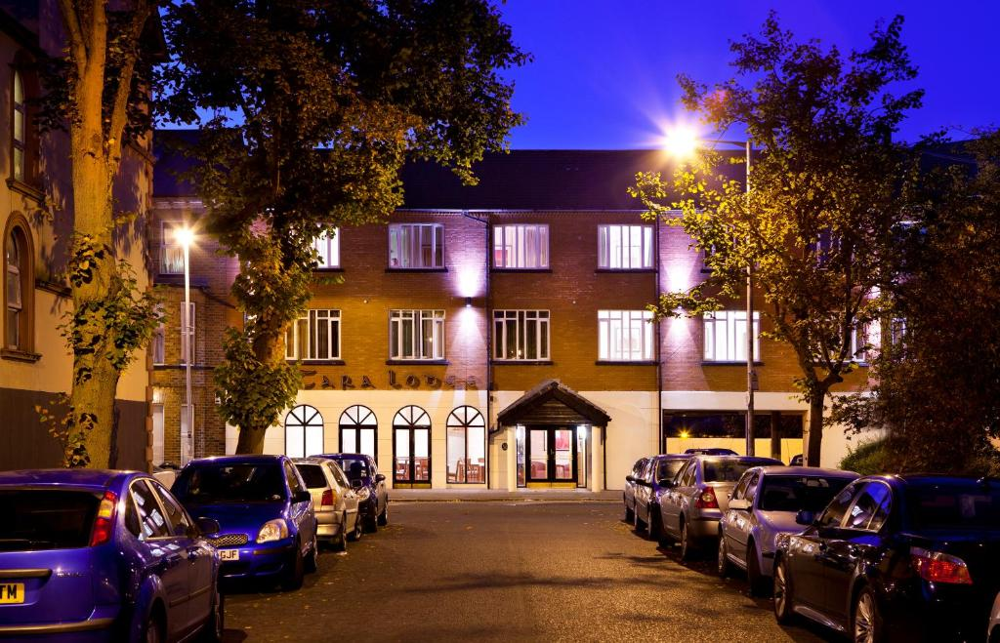
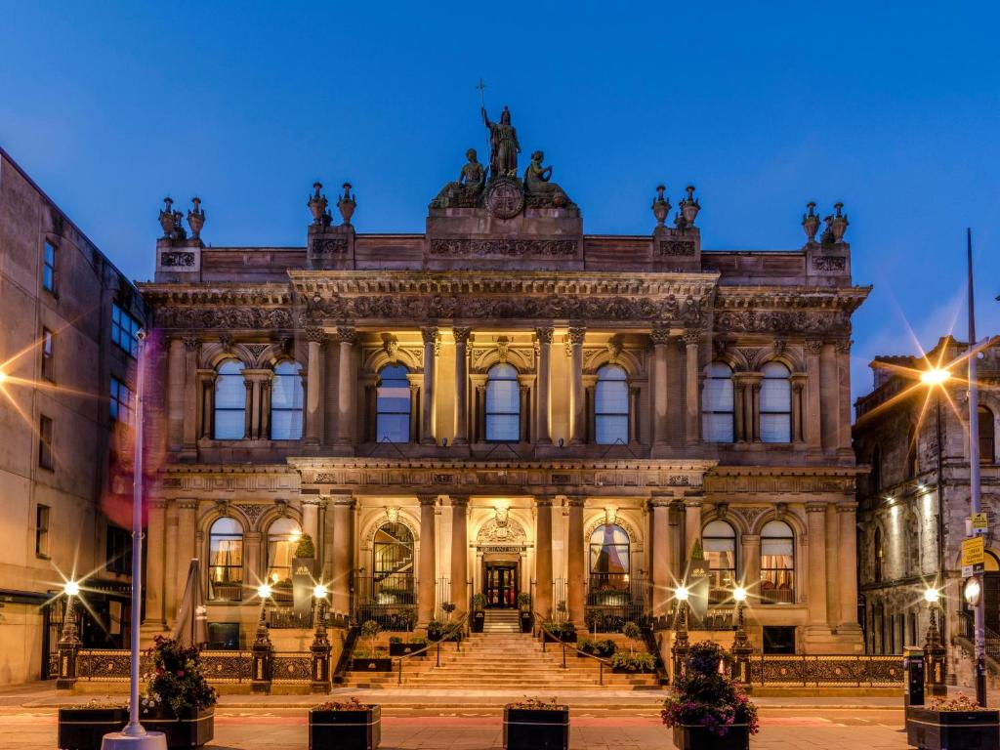
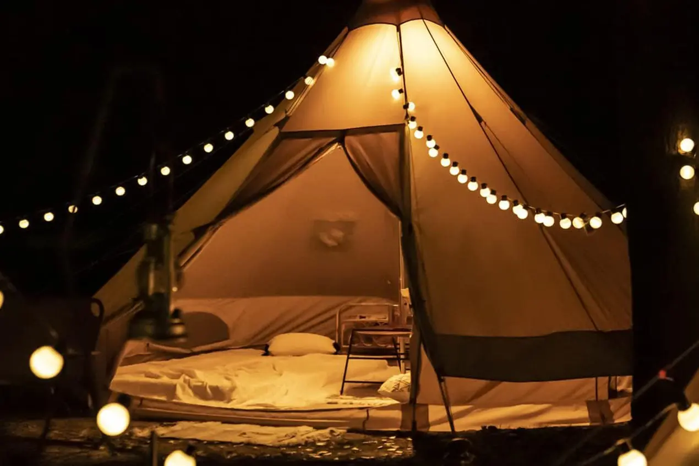
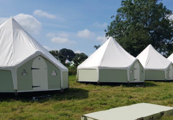

| Hotel | Location | Website |
|---|---|---|
| room2 Belfast Hometel  |
room2 Website | |
| Tara Lodge  |
Tara Lodge Website | |
| The Merchant Hotel  |
The Merchant Hotel Website |
| Accomodation | Description | Link |
|---|---|---|
| Glamping Tents  |
Glamping at Tuff Festival combines the thrill of camping with the luxury of hotel accommodations. Our glamping tents are designed for comfort and style, featuring plush beds, luxurious linens, and tasteful decor that create an inviting atmosphere. Each tent is equipped with essential amenities like electricity and cozy seating areas, making it easy to relax after a lively day of music and festivities. This family-friendly option not only provides a memorable experience but also offers the chance to sleep close to the vibrant energy of the festival. | Glamping Tents Examples |
| Festival Pods  |
Experience the freedom of mobility without sacrificing comfort by opting for a luxury RV rental at Tuff Festival. These fully equipped RVs feature spacious living areas, modern kitchens, and private bathrooms, providing all the conveniences of home. Guests can enjoy the flexibility to explore the festival grounds while having a comfortable base nearby. With the added benefit of a private space, families can unwind and recharge whenever they need a break from the excitement. The luxury RV experience makes it easy to enjoy the festival at your own pace, ensuring a fantastic stay. | Festival Pods Examples |
| Luxury RV |
Festival pods offer a unique and contemporary accommodation experience for Tuff Festival attendees. These compact yet stylish units are designed for convenience, with cozy sleeping arrangements and practical features like power outlets and storage. Perfect for small groups or families, the pods create a sense of community while ensuring privacy and comfort. Guests can socialize in outdoor common areas or enjoy the festival atmosphere right outside their door. With easy access to the festival grounds, festival pods are an ideal choice for those who want to embrace the excitement while having a cozy, functional space to call home during the event. | Luxury RV Examples |
| Transport | Description | Link |
|---|---|---|
| Shuttle Buses |
Shuttle buses provide a convenient and efficient transportation option for attendees of Tuff Festival. Running regularly between major points in the city and the festival grounds, these shuttles make it easy for families and friends to arrive without the hassle of parking. The buses are designed to accommodate large groups and are equipped with comfortable seating, ensuring a pleasant travel experience. Additionally, the shuttle service alleviates concerns about traffic or navigating unfamiliar roads, allowing festival-goers to focus on enjoying the event. | Shuttle Bus Website |
| Bike Rentals |
For a fun and eco-friendly way to explore the festival area, bike rentals are an excellent choice. Attendees can easily rent bicycles from various vendors set up near the festival grounds. Cycling not only provides a fast and enjoyable means of transport, but it also allows festival-goers to appreciate the surrounding scenery. With dedicated bike lanes and paths, riding a bike is a safe way to navigate to and from the event. Families can ride together, making it a memorable outing while promoting a healthy lifestyle. | Bike Rental Website |
| Ride-Sharing Services |
Utilizing ride-sharing services like Uber or Lyft is a flexible transport option for those attending Tuff Festival. These services provide the convenience of door-to-door transportation, allowing festival-goers to request rides directly from their accommodations or nearby locations. With multiple pick-up and drop-off points around the festival, it’s easy to avoid the crowds and get to the event quickly. This option is particularly beneficial for larger groups or those needing flexibility in their travel plans, ensuring a stress-free journey to and from the festival. | Ride Sharing Services |